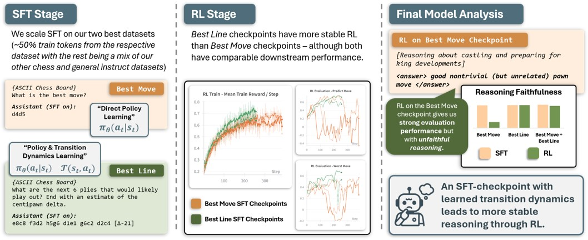

Finance foundation
Studied finance at WashU in St. Louis and learned how to think clearly about incentives, markets, and messy real-world systems.
Nebraska to St. Louis to San Diego
I'm Lucas, a UCSD machine learning student and researcher working on RL for LLMs. Before that: finance at WashU, two years in investment banking at FT Partners, and then a deliberate detour into math, machine learning, and computer science.
The point of the detour was simple: figure out whether the technical path was real. It was. Now I like problems that combine rigor, systems thinking, and something tangible on the other side.
Trajectory
Studied finance at WashU in St. Louis and learned how to think clearly about incentives, markets, and messy real-world systems.
Worked two years in investment banking, which taught speed, standards, and what kind of work I did not want to do forever.
Took a year off to study math, ML, and CS full-time. Also happened to do it while moving around the world with one backpack.
At UCSD, doing research on RL for LLMs and building environments that make agent behavior more measurable and more realistic.
Three Lenses
The professional version, the research version, and the version that explains why there is also a route map and a dinosaur in here somewhere.

Projects, essays, systems work, and the parts that translate cleanly into a resume.

Papers, open questions, current work with PEARLS Lab, and the ideas I keep returning to.

The travel map, the side quests, and proof that I am more of a person than the concise version above suggests.